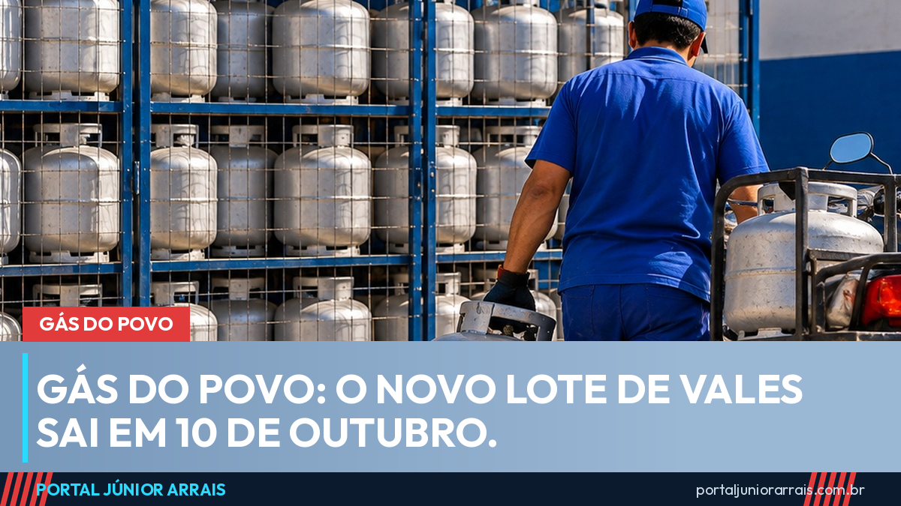

Gás do Povo: novo lote de vales sai em 10 de outubro; vale de setembro vence no dia 9

O próximo lote de vales do Gás do Povo sai no sábado, 10 de outubro. O programa tem data fixa definida pelo Ministério do Desenvolvimento Social (MDS): os vales novos são liberados todo dia 10, caia em dia útil, fim de semana ou feriado. Para quem recebeu o vale de setembro e ainda não trocou o botijão, isso significa um prazo: até 9 de outubro.
Quem recebe e de quanto em quanto tempo
Nem toda família recebe vale todo mês. A frequência depende do número de pessoas registradas no Cadastro Único:
- famílias com 2 ou 3 pessoas: 4 recargas por ano, uma a cada 3 meses;
- famílias com 4 pessoas ou mais: 6 recargas por ano, uma a cada 2 meses.
Por isso, é normal uma família receber em setembro e não em outubro, ou o contrário. O que define o mês é o ciclo em que ela entrou no programa. Para participar, a família precisa estar no CadÚnico com os dados atualizados nos últimos 24 meses e ter renda de até meio salário mínimo por pessoa; o programa dá prioridade a quem recebe Bolsa Família. As regras completas estão no guia do Gás do Povo.
Como a troca funciona na revenda
O vale cobre a recarga de um botijão de 13 kg em revenda credenciada, em qualquer cidade do país. A troca é validada na maquininha com o cartão do Bolsa Família com chip, com o cartão de débito da Caixa ou com o CPF do responsável familiar e um código enviado por SMS ao celular cadastrado. Celular desatualizado no cadastro continua sendo o principal motivo de a troca não sair na hora.
O vale não inclui entrega em casa nem a compra do vasilhame para quem não tem botijão. Esses valores podem ser cobrados pela revenda, e vale perguntar antes.
Cuidado com golpe
Perto do dia 10, circulam mensagens prometendo "sacar o valor do gás em dinheiro" ou "antecipar o vale de outubro" por meio de um link. O programa não deposita dinheiro: o benefício é só a recarga na revenda. Nenhum órgão do governo cobra taxa, pede Pix, senha ou dados do cartão para liberar vale.
Se a família cumpre as regras e o vale deixou de aparecer, ou se o benefício foi cortado depois de uma mudança no cadastro, procure um profissional de sua confiança para verificar a situação antes do próximo lote.
Conteúdo informativo — não substitui orientação individualizada sobre o seu caso.
Júnior Arrais · Editor do Portal Júnior Arrais
Comunicador de Ubá (MG). Escreve todos os dias sobre benefícios sociais, INSS, trabalho e economia do dia a dia, a partir do Diário Oficial, de portarias e de fontes oficiais, em linguagem simples. Conheça a linha editorial e a política de correções do portal.